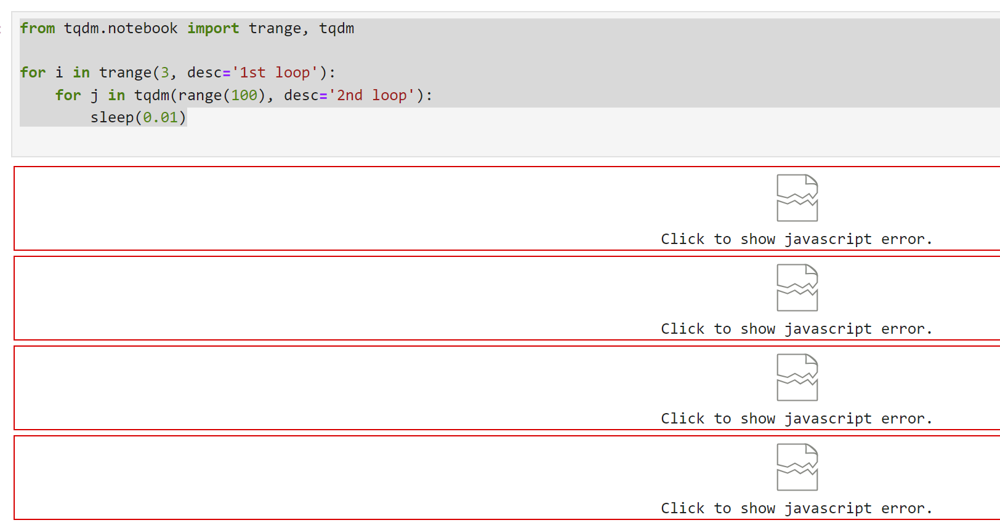

Cannot quit (Ctrl-C ineffective) and after a kill the zsh session is broken. Have to restart.
TQDM
Just With this simple code,
from tqdm.notebook import trange, tqdmfrom time import sleepfor i in trange(3, desc='1st loop'):for j in tqdm(range(100), desc='2nd loop'): sleep(0.01)
I get 
And error message is:
[Open Browser Console for more detailed log - Double click to close this message]
Failed to load model class 'HBoxModel' from module '@jupyter-widgets/controls'
Error: Module @jupyter-widgets/controls, version ^1.5.0 is not registered, however, 2.0.0 is
at f.loadClass (http://localhost:8888/lab/extensions/@jupyter-widgets/jupyterlab-manager/static/134.b4eddbb09f5fd50a4007.js?v=b4eddbb09f5fd50a4007:1:75055)
at f.loadModelClass (http://localhost:8888/lab/extensions/@jupyter-widgets/jupyterlab-manager/static/336.9f709c2076672b1bfe2b.js?v=9f709c2076672b1bfe2b:1:10729)
at f._make_model (http://localhost:8888/lab/extensions/@jupyter-widgets/jupyterlab-manager/static/336.9f709c2076672b1bfe2b.js?v=9f709c2076672b1bfe2b:1:7517)
at f.new_model (http://localhost:8888/lab/extensions/@jupyter-widgets/jupyterlab-manager/static/336.9f709c2076672b1bfe2b.js?v=9f709c2076672b1bfe2b:1:5137)
at f.handle_comm_open (http://localhost:8888/lab/extensions/@jupyter-widgets/jupyterlab-manager/static/336.9f709c2076672b1bfe2b.js?v=9f709c2076672b1bfe2b:1:3894)
at _handleCommOpen (http://localhost:8888/lab/extensions/@jupyter-widgets/jupyterlab-manager/static/134.b4eddbb09f5fd50a4007.js?v=b4eddbb09f5fd50a4007:1:73471)
at y._handleCommOpen (http://localhost:8888/static/lab/jlab_core.5f8e30c3b3cb076c81d8.js?v=5f8e30c3b3cb076c81d8:1:1235935)
at async y._handleMessage (http://localhost:8888/static/lab/jlab_core.5f8e30c3b3cb076c81d8.js?v=5f8e30c3b3cb076c81d8:1:1237925)